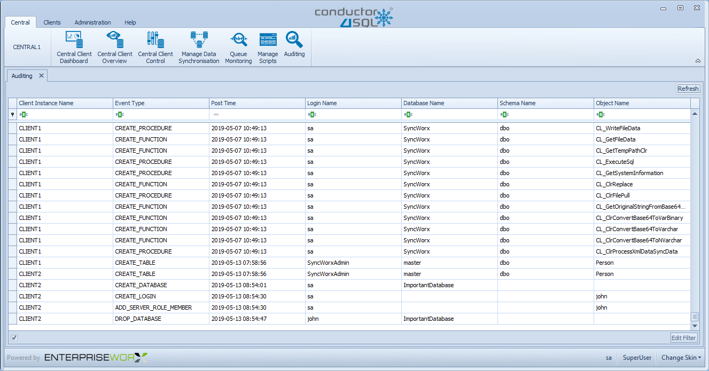
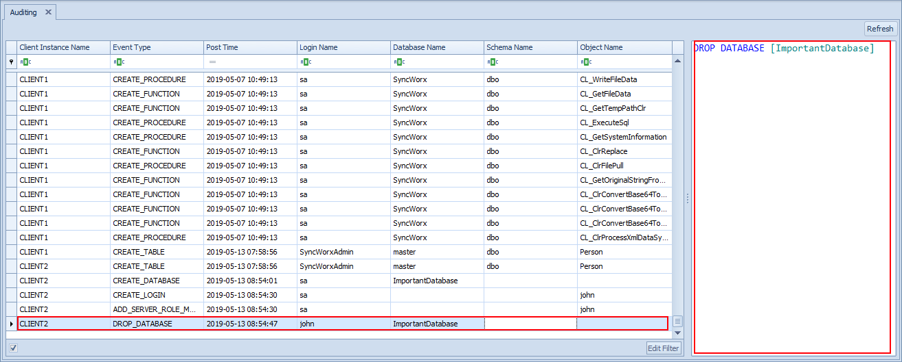

Auditing Overview
The Audit feature of Conductor4SQL provides you with the functionality to expose events within your MS-SQL server environment for a specific Client or for certain events across one or more clients.
Events audited are contained at server level only and cover DDL statements, such as Create, Alter or Drop server level or database objects. An example of objects would be Create login, Create database, Create table, Drop stored procedure, Alter view, etc.
This feature is extremely useful for establishing when an object was created, altered or dropped in your SQL environment and also who did it and when it was done.
Additionally, Conductor4SQL allows you to create audit alerts where you can setup alerts for these audit events to pro-actively monitor your SQL server environment for specific events. e.g. you could easily set up an alert to notify you when database POS is dropped.
Note
All server level events are audited regardless of whether they originated from the Conductor4SQL system or by other means, such as SQL server management studio, command line SQL or using an application like T-SQL, etc.
The Central Auditing Screen
In order to be able to see the captured audits, you need to click on the Auditing tab, see below

From here you can see all client events in which you can filter to your hearts content.
Clicking on a specific row on the grid will then open a details pane on the right of your screen to see that actual T-SQL script that was executed.

Note
List of audit events can be found in the Audit Events section